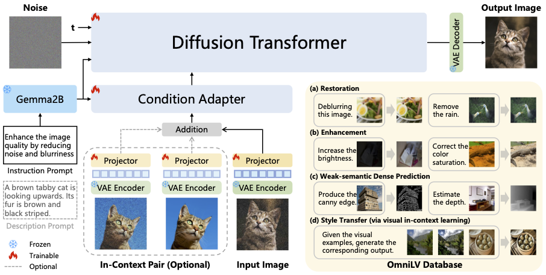
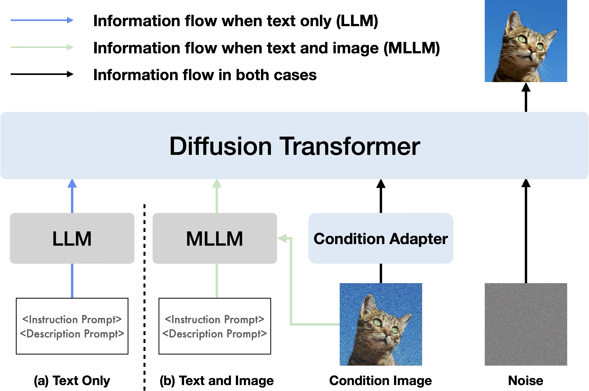
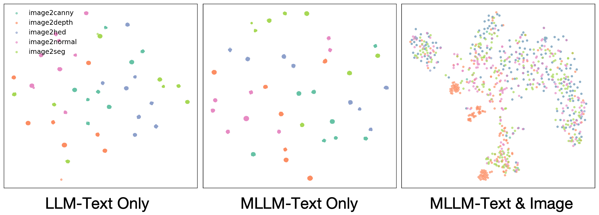
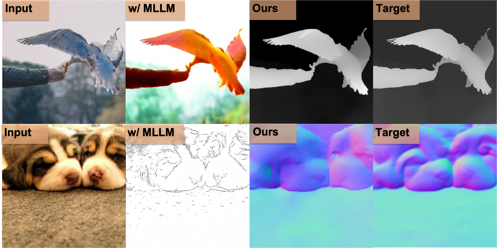

A Unified Multimodal Framework for General Low-Level Vision
Lumina-OmniLV is a universal low-level vision model that supports
100+ sub-tasks with both textual and visual prompts,
spanning restoration, enhancement, weak-semantic dense prediction, and stylization.
Image Restoration: Unified handling of denoising, deblurring, dehazing, deraining, and artifact removal.
Image Enhancement: Prompt-guided brightness, color, contrast, and perceptual quality improvements.
Dense Prediction: A single framework for edge, depth, and normal map estimation tasks.
Multimodal Prompting: Flexible interaction via text instructions and visual in-context exemplars.
1 Shanghai Jiao Tong University 2 Shanghai AI Laboratory 3 University of Macau 4 Shenzhen Institutes of Advanced Technology, Chinese Academy of Sciences 5 Shenzhen University of Advanced Technology 6 Institute of Artificial Intelligence (TeleAI), China Telecom
We present Lumina-OmniLV (abbreviated as OmniLV), a universal multimodal multi-task framework for low-level vision that addresses over 100 sub-tasks across four major categories, including image restoration, image enhancement, weak-semantic dense prediction, and stylization. OmniLV leverages both textual and visual prompts to offer flexible, user-friendly interactions.
Built on Diffusion Transformer (DiT)-based generative priors, our framework supports arbitrary resolutions and achieves optimal performance at 1K resolution while preserving fine-grained details and high fidelity. Through extensive experiments, we demonstrate that separately encoding text and visual instructions, combined with co-training using shallow feature control, is essential to mitigate task ambiguity and improve multi-task generalization.
Method

Figure 1: Overall framework of OmniLV. Input and noise latents are patchified into visual tokens, text prompts are processed by Gemma2B, and denoised latents are decoded into high-fidelity outputs.
Results
We organize results into five categories. Each category shows featured examples by default and supports one-click expansion to all pairs.
Loading visual comparisons...
Insights
Additional analyses from the paper highlighting model behavior and design tradeoffs.

Figure 2: Multimodal prompting improves adaptability across heterogeneous low-level tasks.

Figure 3: Feature-space clustering reveals stronger task decoupling with separate text and visual encoding.

Figure 4: Mixing high-level generative objectives can hurt detail-sensitive restoration quality.
Citation
@article{pu2025luminaomnilv,
title = {Lumina-OmniLV: A Unified Multimodal Framework for General Low-Level Vision},
author = {Pu, Yuandong and Zhuo, Le and Zhu, Kaiwen and Xie, Liangbin and Zhang, Wenlong and Chen, Xiangyu and Gao, Peng and Qiao, Yu and Dong, Chao and Liu, Yihao},
journal = {arXiv preprint arXiv:2504.04903},
year = {2025}
}